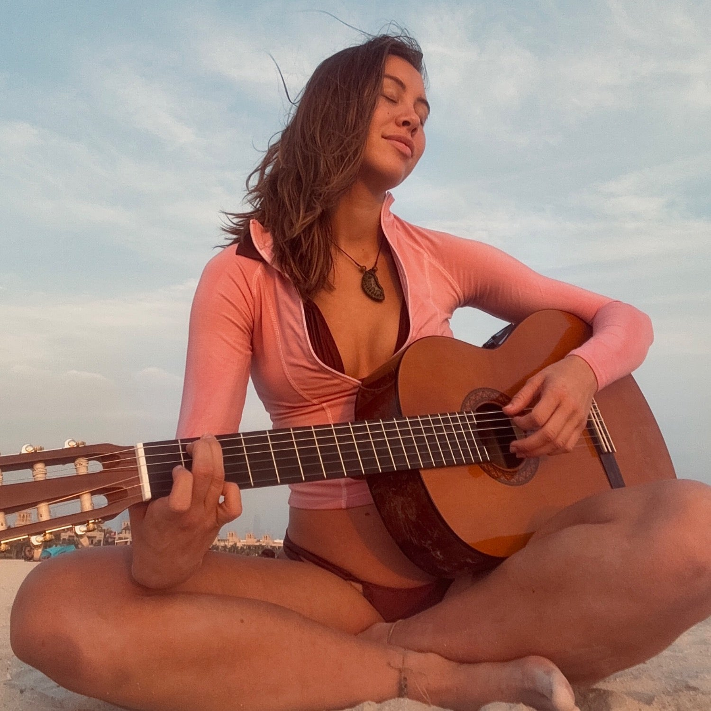
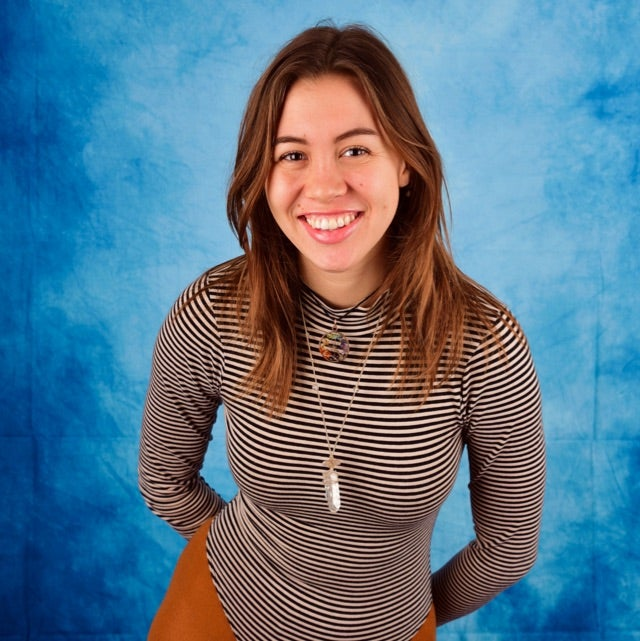
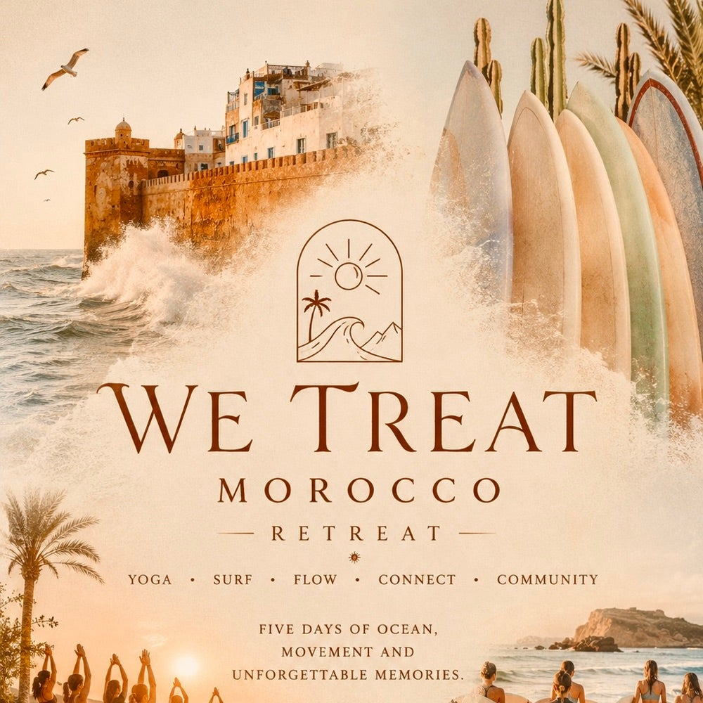
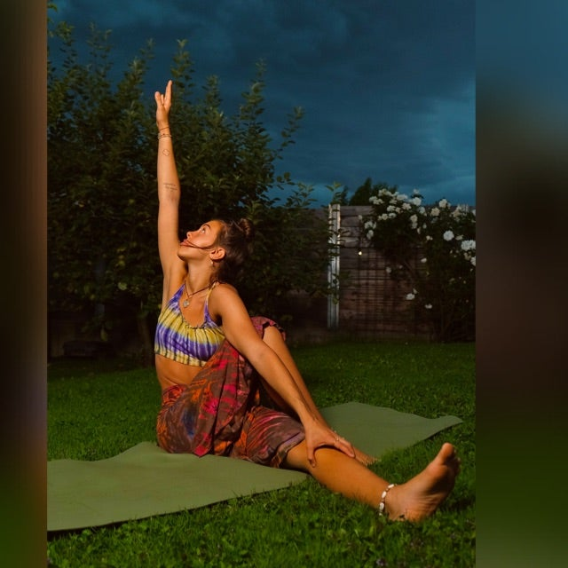
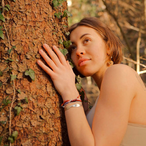
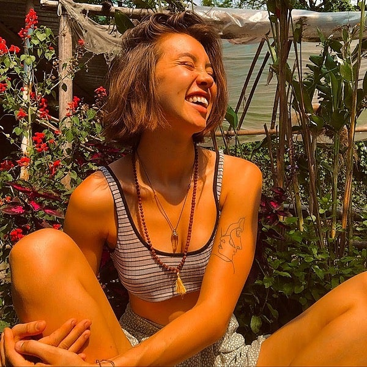

Musik
Eigene Songs, Stimme als Instrument und Klang als Zugang zu dem, was Worte nicht erreichen — live in Circles oder zum Nachhören.
Voice Activation · Singing CirclesIch begleite dich mit Musik, Atem und achtsamer Körperarbeit — in Retreats, in 1:1-Sessions und in Frauenkreisen. Damit du wieder in Verbindung kommst: mit dir, deiner Stimme und dem, was wirklich zählt.

Musik, Körper und Gemeinschaft greifen ineinander. Was zu dir passt, finden wir gemeinsam heraus.
Eigene Songs, Stimme als Instrument und Klang als Zugang zu dem, was Worte nicht erreichen — live in Circles oder zum Nachhören.
Voice Activation · Singing CirclesMehrtägige Auszeiten mit Yoga, Breathwork, Musik und echter Gemeinschaft — an besonderen Orten, mit Raum für dich und deine Stimme.
Yin Yoga · Breathwork · CommunityPersönliche, spirituelle Begleitung ganz auf dich zugeschnitten — für Klarheit, Verbindung und die nächsten Schritte auf deinem Weg.
Online & nach Absprache„Ich begleite Menschen — online und persönlich — mit Musik, Yoga und Frauen-Körperarbeit, damit Heilung, Wachstum und Loslassen möglich werden. Und damit wir uns erinnern, wer wir wirklich sind."Mary Lou Ender

Musik war für mich immer schon mehr als Klang — sie ist ein Weg zurück zu mir selbst. Über die Jahre habe ich sie mit Yoga, Atemarbeit und bewusster Gemeinschaft verbunden: als Werkzeuge, die Menschen helfen, wieder ganz bei sich anzukommen.
Heute begleite ich das als Facilitatorin bei Retreats, in 1:1-Sessions und in Frauenkreisen — mit Yin Yoga, Breathwork und Voice Activation. Mein Anspruch dabei: ein sicherer Raum, in dem jede Stimme gehört wird.
In Ko-Facilitation mit Katharina Eller (Yoga Vila): Yoga, Surf, Musik und Gemeinschaft an der marokkanischen Atlantikküste.

Fünf Tage Yoga & Sadhana, Surf, gemeinsames Kochen, Abendkreise mit Musik und Meditation — im Ocean House direkt am Atlantik.
Details & Anmeldung ↗Kostenfreie Formate zum Reinschnuppern — bevor du dich für eine 1:1-Begleitung oder ein Retreat entscheidest.
Ein geschützter Kreis für Frauen, die sich austauschen und gegenseitig stärken möchten.
Kreis beitreten ↗Offene Gespräche über das, was unter der Oberfläche liegt — ehrlich, ohne Bewertung.
Dazustoßen ↗
Gemeinsame Praxis mit Yoga und Stille als stiller Beitrag zu mehr Frieden.
Mitmachen ↗Meine Musik entsteht aus denselben Räumen wie meine Begleitung — ehrlich, verletzlich, verbindend.

Mein aktueller Song auf Spotify — ein Stück über Liebe an den falschen Orten und den Weg zurück zu sich.
Auf Spotify hören ↗
Weitere Songs, Aufnahmen aus Circles und Einblicke in meine musikalische Arbeit.
Kanal ansehen ↗Ein persönlicher, spiritueller Begleitprozess ganz auf dich zugeschnitten — meist online, mit Raum für das, was gerade dran ist. Wir klären den genauen Ablauf vorab gemeinsam.
Nein. Bei Voice Activation und Singing Circles geht es nicht um Perfektion, sondern um authentischen Ausdruck — jede Stimme ist willkommen, genau so wie sie ist.
Fünf Tage mit Morgen-Yoga, Surf am Nachmittag und Abendprogrammen wie Musik, Meditation und Sharing Circles. Alle Details und die Anmeldung findest du auf der Retreat-Seite von Katharina Flows.
Ja, die Community-Kreise (Women Circle, Soul Talk, Yoga for Peace) sind offene, kostenfreie Formate zum Reinschnuppern.
Das kläre ich gerne direkt mit dir — schreib mir einfach über das Kontaktformular, dann finden wir gemeinsam den passenden Rahmen.
Ich melde mich persönlich bei dir zurück, in der Regel innerhalb weniger Tage.